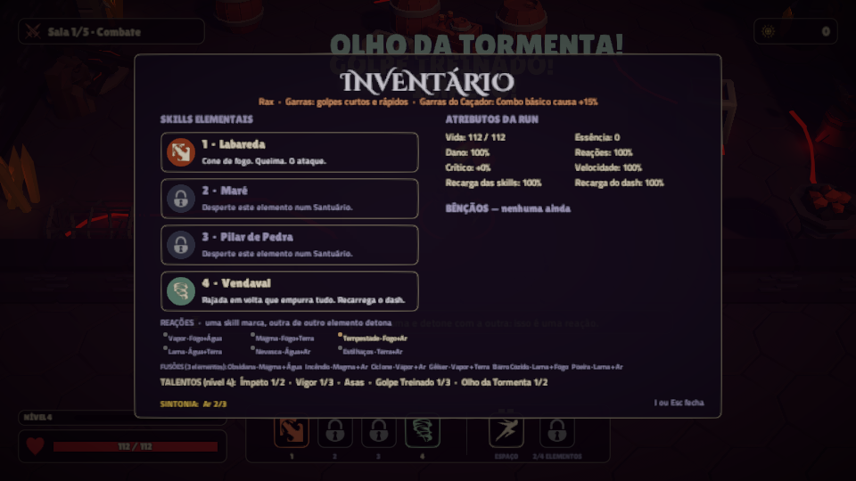
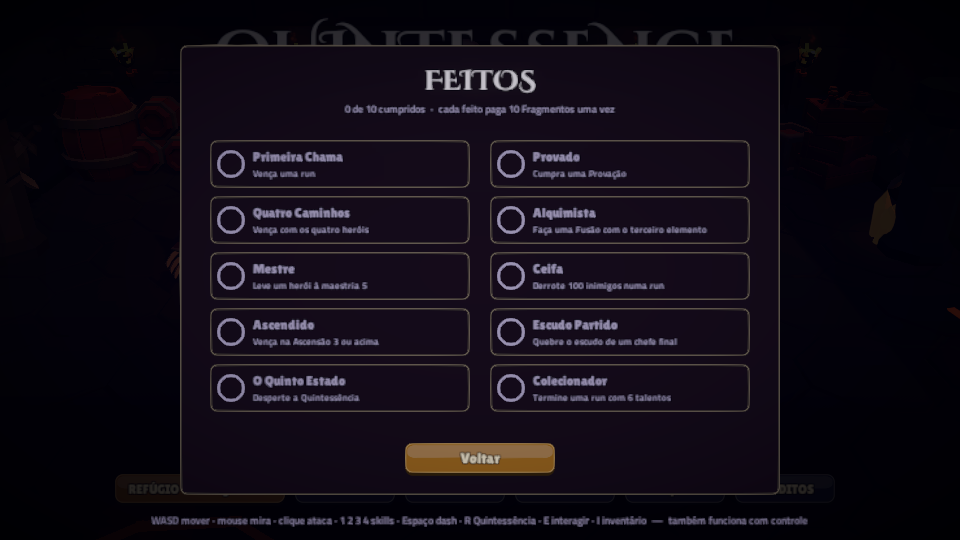
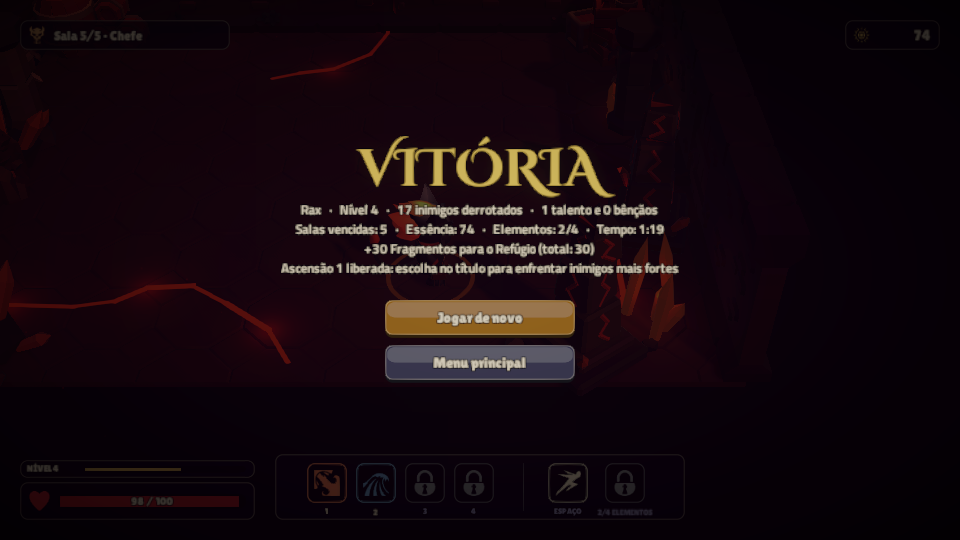
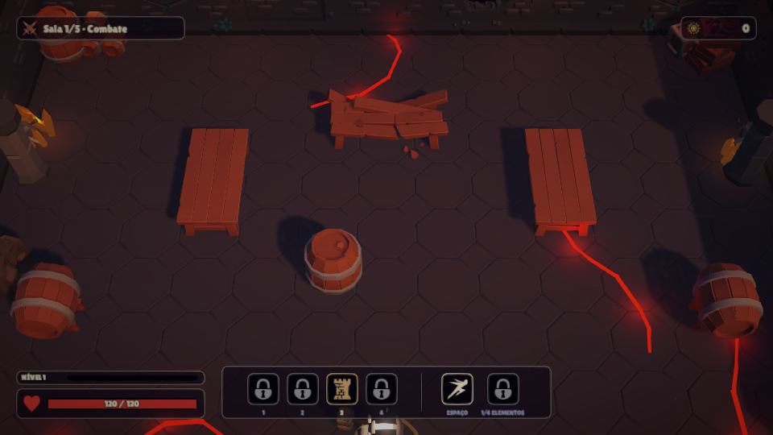
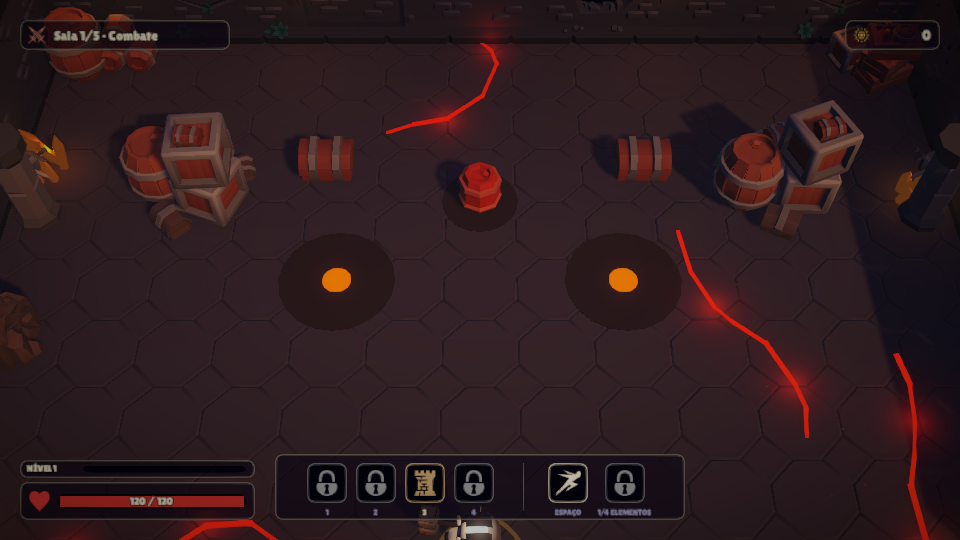
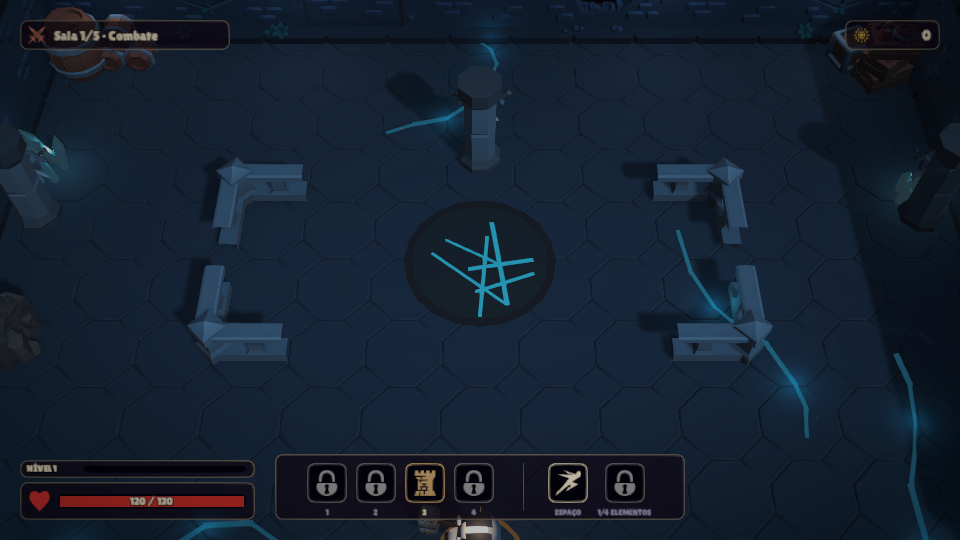
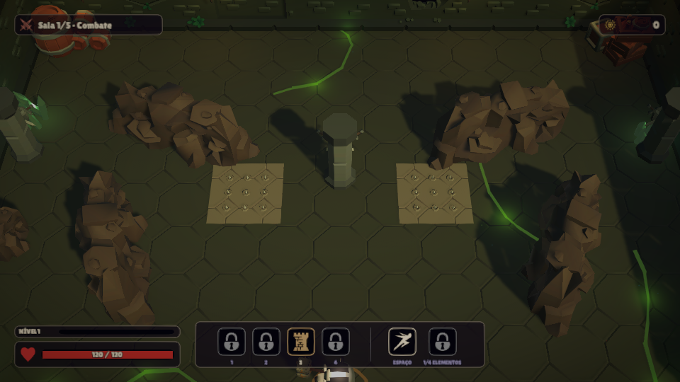
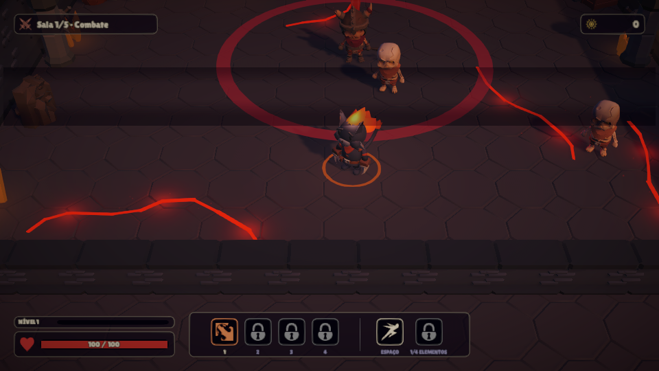
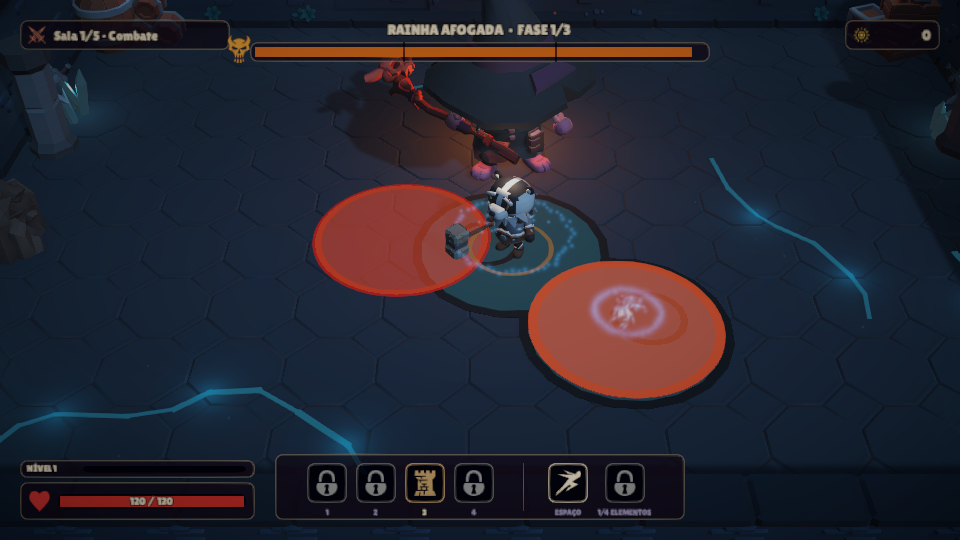
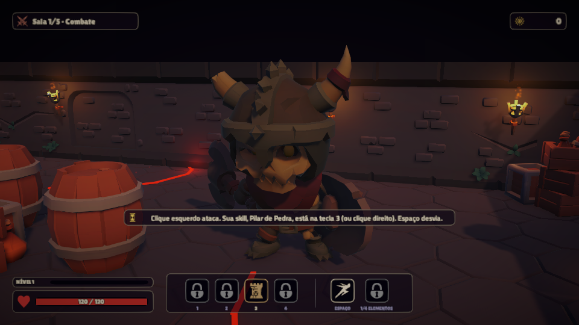

Tudo o que entrou na noite
Das 22h às 9h30: 227 commits no main, cada um no nome de quem cuida da frente, com os testes passando antes de cada commit. Mais heróis, monstros, salas, skills que combinam e um sistema de nível e build.
Heróis
Os quatro heróis do jogo 2D chegaram ao 3D, um por elemento inicial. As cabeças, caudas e armas foram modeladas no Blender sobre os corpos do pack KayKit, no mesmo acabamento fosco.
- Rax (Fogo, garras curtas e rápidas), Liora (Água, chicote longo e estreito), Brann (Terra, martelo lento e largo) e Vey (Ar, adagas velozes com mais crítico). Cada um tem golpe básico próprio.
- Passiva de cada herói: Rax +15% no combo; Liora cura ao limpar a sala; Brann +20 de vida; Vey mais velocidade, dash mais rápido, 25% de esquiva e cura a cada esquiva.
- Despertar da Quintessência próprio: Erupção do Caçador (queima), Maré da Fonte (encharca e cura), Rugido da Montanha (atordoa), Olho do Vendaval (empurra e cega). NOVO
- Maestria: cada run dá experiência ao herói usado; cinco níveis liberam vida, talento inicial, dano, troca e Essência. NOVO
- Talento de assinatura, só para o herói dele: Instinto do Caçador, Maré Crescente, Pele de Pedra e Vento de Cauda. NOVO


Combate e skills que combinam
O golpe básico é neutro, e as skills 1 a 4 têm papel próprio: a Labareda queima, a Maré cura e limpa, o Pilar bloqueia e o Vendaval recarrega o dash. Uma skill marca e a de outro elemento detona a reação. A noite foi para fazer tudo isso se combinar.
- Seis Fusões: a skill de um terceiro elemento sobre a área de uma reação vira Obsidiana, Incêndio, Ciclone, Gêiser, Barro Cozido ou Tempestade de Poeira. NOVO
- Afinidade elemental: elementais resistem ao próprio elemento e são fracos a outro, com os rótulos FRAQUEZA e RESISTE. NOVO
- O cenário entra no combo: a poça de corrupção marca quem está dentro com o elemento do trecho, e o Cristal de Ressonância estoura e marca o bando em volta. Até um herói de um elemento só consegue reação. NOVO
- Esquiva perfeita: dar dash através de um golpe enche 8% da Quintessência e deixa o próximo básico crítico. NOVO
- Talentos de combo: Cadência (skill de outro elemento logo depois da anterior causa +15% por nível), Contágio (a marca de quem cai pula para o vizinho), Alquimia (Fusões mais fortes), Flanqueador (golpe pelas costas) e seis talentos de reação, um por par. NOVO


Nível, talentos e build
Inimigo derrotado dá experiência, e cada nível oferece talentos para escolher com a sala limpa. Por cima disso vem o progresso permanente entre runs.
- 33 talentos de corpo, de skill, de reação, de combo e de assinatura; os de skill só aparecem com o elemento desperto. NOVO
- Sintonia: 3 talentos de um elemento deixam a skill dele +20% mais forte; com 5, ela também recarrega 15% mais rápido. Aparece no cartão do talento e no inventário. NOVO
- Santuário aprofunda: além de despertar um elemento, sobe uma skill até o grau III, que ganha efeito de assinatura.
- 29 bênçãos, Pacto que sorteia 3 de 5, Pergaminho de talento na Loja.
- Refúgio com 8 melhorias permanentes (novas: Sabedoria, Intuição para trocar as opções e Clarividência para ver 4 talentos), Ascensão em 5 níveis e 10 Feitos. NOVO
- Resultado da run com a linha Build: Sintonia, Fusões, esquivas perfeitas, Cadências e talento de assinatura.




Salas maiores e mais variadas
A run tem 10 salas por três trechos, Salões de Cinza, Cripta Afogada e Jardim de Pedra, até o Coração das Cinzas. Cada trecho tem pedra tingida, sua própria mistura de inimigos, música e adereços. A sala de luta cresceu para 28 x 20 m.
- 31 arranjos de sala (eram 6): alguns com estrutura (Três Corredores, Fortim, Bastião em L, Galeria), 8 que só aparecem no próprio trecho e os últimos com a mobília do pack (Refeitório, Arsenal, Ossário, Clareira). NOVO
- Perigos: barril de pólvora que explode em cadeia, espinhos, respiradouro de brasa e poças de corrupção. A primeira sala vem sem perigos.
- Salas novas: Tesouro; Pacto; Provação, um desafio sorteado (contra o relógio, ileso ou sem dash) que paga um talento extra; e Cerco, 40 s de ondas sem fim que pagam uma bênção. NOVO
- Cenário por tipo de sala: Descanso, Mestre (o Mestre em pessoa), Tesouro, Pacto, Cerco e Provação, só com peças do pack e sem atrapalhar a luta.
- Mapa com faixas dos trechos e borda sul da sala, para a câmera não mostrar o vazio.








Monstros e chefes
Cada inimigo novo pede uma resposta diferente do jogador. Todos foram montados com peças do pack e acessórios próprios, e todo ataque é avisado antes.
- 10 inimigos novos (14 no total): Ceifador (investida em linha), Arremessador (bomba em área), Xamã (cura aliados), Cinzentos (enxame), um elemental por trecho (Brasa Viva, Afogado e Sentinela de Pedra), Escudeiro (de frente o escudo segura quase tudo: contorne, congele, enraíze ou atordoe), Porta-Estandarte (aura que fortalece o bando) e Espectro (reaparece nas suas costas). NOVO
- Elite: um Campeão na última onda e 7 traços anunciados na porta; os novos são Voláteis, Protegidos, Divisores (cada um que cai vira dois Cinzentos) e Espinhosos (devolvem parte do golpe básico).
- 3 mini-chefes nas Elites mais adiante, sorteados por sala: Carrasco, Sacerdotisa Afogada e Colosso de Pedra. NOVO
- 3 chefes finais sorteados por run: o Guardião das Cinzas, refeito com arte própria e ataques novos (Investida e Anel de Cinzas); a Tecelã das Cinzas, que luta de longe e se teletransporta; e a Rainha Afogada, com erupções que deixam poças e Afogados de reforço. O escudo da última fase cai com a Quintessência. NOVO









Para quem joga
- Continuar run: o jogo salva ao entrar em cada sala, e o título oferece retomar. NOVO
- Dicas de primeira vez, uma vez por jogador, para cada mecânica nova (reação, Fusão, Escudeiro, esquiva perfeita, Cerco...).
- Dificuldade Tranquila (35% menos dano) nas Opções e na pausa; as duas primeiras salas servem de aquecimento.
- Grimório com heróis, maestria, inimigos, reações e Fusões; Treino com o herói escolhido; Esc fecha os painéis do título.
- A pausa mostra o resumo da run, a derrota mostra quem derrubou o herói, os chefes entram com o nome no letreiro, o tremor de tela pode ser desligado e o jogo funciona com controle.
- Som: música própria da Cripta e do Jardim, com troca suave, e efeitos de subir de nível, Campeão, despertar, Feito e Divisor.
- WebGL: página de carregamento própria, sem a abertura da Unity, rodando a 120 FPS no Chrome; zip de 24,5 MB.


Qualidade e equilíbrio
| O quê | Como ficou |
|---|---|
| Testes | 549 de regra + 37 jogando, todos passando antes de cada commit no main |
| Revisões de bugs | Um agente separado revisou cada leva (mais de dez revisões na noite), e todos os achados foram corrigidos. Nenhum deles travava o jogo |
| Sonda de balanceamento | Um roteiro joga runs inteiras como um jogador razoável: desvia de 65% dos avisos, combina skills e quebra o escudo do chefe. A dificuldade foi calibrada para cerca de metade a dois terços de vitórias, sem Refúgio nem maestria |
| Última medição | 16 de 24 runs (Rax 4, Liora 5, Brann 4, Vey 3 de 6), nenhuma presa, nenhuma exceção |
| Ajustes pela sonda | Vey reforçado várias vezes (o último: esquiva de 20% para 25%, que levou ele de 1 para 3 de 6); Cadência baixada de +30% para +15%, porque quem pegava vencia sempre |
| Documentação | progresso.html (detalhe de cada leva, com fotos), GDD, README e ARQUITETURA.md com os contratos novos |
Falta fazer (depende de vocês)
- Subir
Builds/Quintessence-WebGL.zipno itch.io. Nada foi enviado; o zip das 09h24 já foi conferido no Chrome. - Jogar uma run de verdade e testar com controle: a dificuldade só foi medida pela sonda.
- Olhar o Vey e a Cadência na mão. Se o Vey ainda parecer frágil, o próximo ajuste é o empurrão do terceiro golpe das adagas.
- Aprovar a lore marcada como proposta no GDD, colar o GDD no Milanote e alinhar a rubrica com o professor (semana de 16/11).